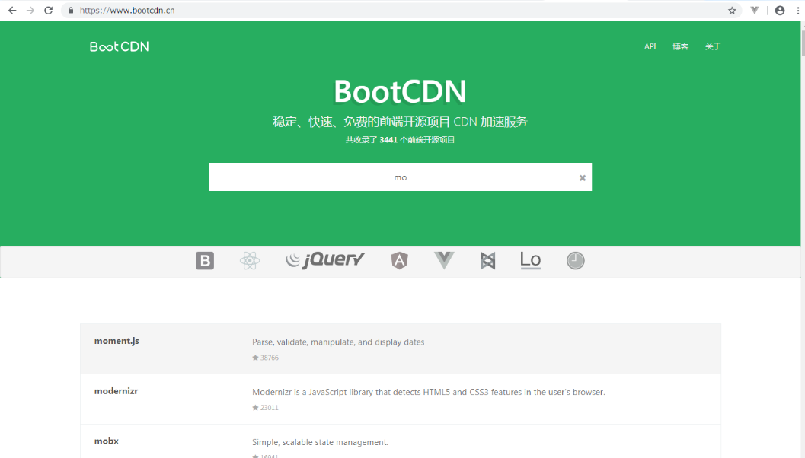
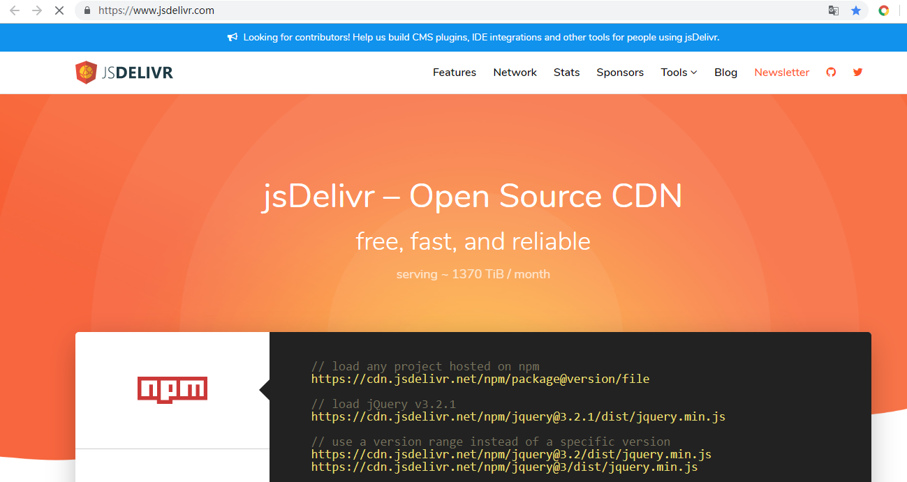
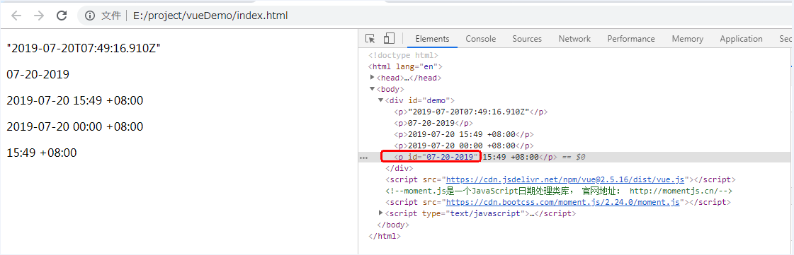
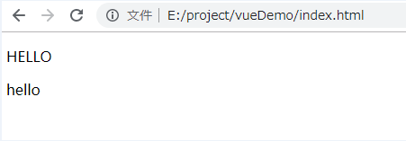
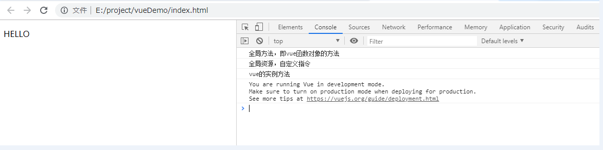

常用下载js的网址：
https://www.bootcdn.cn/
https://www.jsdelivr.com/


vue 允许自定义过滤器，用于格式化一些常见文本（如日期等）。
（1）直接使用 Vue.filter() 来创建一个过滤器（全局过滤器）。
Vue.filter('filterA ', function (value) {
if (!value) return ''
value = value.toString()
return value.charAt(0).toUpperCase() + value.slice(1)
})
new Vue({
// ...
})（2）在 vue 内部使用 filters 来创建一个过滤器（局部过滤器）。
new Vue({
// ...
filters: {
filterA : function (value) {
if (!value) return ''
value = value.toString()
return value.charAt(0).toUpperCase() + value.slice(1)
}
}
})（1）使用双大括号。
{{ message | filterA }}（2）使用 v-bind 表达式
<div v-bind:id="message | filterA "></div>（3）过滤器可以串联。
{{ message | filterA | filterB }}（4）过滤器是 JavaScript 函数，因此可以接收参数。
{{ message | filterA('arg1', 'arg2') }}moment.js是一个JavaScript日期处理类库， 官网地址： http://momentjs.cn/
【举例：】
<!doctype html>
<html lang="en">
<head>
<meta charset="UTF-8">
<meta name="viewport" content="width=device-width, user-scalable=no, initial-scale=1.0, maximum-scale=1.0, minimum-scale=1.0">
<meta http-equiv="X-UA-Compatible" content="ie=edge">
<title>Document</title>
</head>
<body>
<div id="demo">
<p>{{newDate}}</p>
<p>{{newDate | filterA}}</p>
<p>{{newDate | filterB}}</p>
<p>{{newDate | filterA | filterB}}</p>
<p :id="message | filterA ">{{newDate | filterC(format)}}</p>
</div>
<script src="https://cdn.jsdelivr.net/npm/vue@2.5.16/dist/vue.js"></script>
<!--moment.js是一个JavaScript日期处理类库， 官网地址： http://momentjs.cn/-->
<script src="https://cdn.bootcss.com/moment.js/2.24.0/moment.js"></script>
<script type="text/javascript">
Vue.filter('filterA', function(value){
return moment(value).format("MM-DD-YYYY");
})
var vm = new Vue({
el: '#demo',
data: {
newDate: new Date(),
format: 'HH:mm Z'
},
filters: {
filterB: function(value){
return moment(value).format("YYYY-MM-DD HH:mm Z");
},
// 使用形参默认值，如arg无值，则使用默认值
filterC: function(value, arg='YYYY-MM-DD HH:mm Z'){
return moment(value).format(arg);
}
}
})
</script>
</body>
</html>
【分类：】
1、v-text： 用于更新元素的文本内容（textContent）。
2、v-html： 用于更新元素的html内容（innerHTML）。
3、v-if： 为true时，显示在页面上。
4、v-else： 与v-if相对应。
5、v-show： 通过display来控制标签的显示与隐藏。
6、v-for： 用于遍历数组或者对象。
7、v-on： 用于绑定事件监听，简写为 @。
8、v-bind： 用于绑定属性并解析表达式，简写为 :。
9、v-model：用于数据的双向绑定，通常用于input标签。
10、v-cloak： 用于防止闪现表达式，一般使用{{}}表达式时，会先显示{{}}，然后再被转换。使用v-cloak可以先不显示{{}}，直接被解析转换。
v-cloak通常与css配合，即使用属性选择器选中v-cloak，然后将其隐藏（display:none）。
11、ref： 用于唯一标识某个标签，通过vue对象的$refs来表示。
【举例：（v-cloak， ref， v-click）】
<!doctype html>
<html lang="en">
<head>
<meta charset="UTF-8">
<meta name="viewport" content="width=device-width, user-scalable=no, initial-scale=1.0, maximum-scale=1.0, minimum-scale=1.0">
<meta http-equiv="X-UA-Compatible" content="ie=edge">
<title>Document</title>
<style type="text/css">
/* 使用属性选择器，定位到 v-cloak属性 ,并将其隐藏*/
[v-cloak]{
display: none;
}
</style>
</head>
<body>
<div id="demo">
<!-- 根据ref定位某个标签，并改变标签的内容 -->
<p ref="change1">{{message}}</p>
<!--由于先扫描文本再解析，即会先显示{{}}，然后再转换，造成闪现的情况，
可以先将标签隐藏，当解析完成后，v-cloak 会失效，此时标签会显示出来，从而解决闪现问题-->
<p ref="change2" v-cloak>{{message}}</p>
<button @click="change1">Change1</button>
</div>
<script src="https://cdn.jsdelivr.net/npm/vue@2.5.16/dist/vue.js"></script>
<script type="text/javascript">
var vm = new Vue({
el: '#demo',
data: {
message: 'hello'
},
methods: {
change1(){
this.$refs.change1.textContent += ' world'
}
}
})
</script>
</body>
</html>
（1）创建方式：
方式一：使用 Vue.directive() 去创建指令（全局指令）。
// 注册一个全局自定义指令 `v-focus`
Vue.directive('focus', function(el, binding){
}
})
【注：】
el：指令所绑定的元素，可以用来直接操作 DOM 。
binding：一个对象，包含以下属性：
name：指令名，不包括 v- 前缀。
value：指令的绑定值，例如：v-my-directive="1 + 1" 中，绑定值为 2。
oldValue：指令绑定的前一个值，仅在 update 和 componentUpdated 钩子中可用。无论值是否改变都可用。
expression：字符串形式的指令表达式。例如 v-my-directive="1 + 1" 中，表达式为 "1 + 1"。
arg：传给指令的参数，可选。例如 v-my-directive:foo 中，参数为 "foo"。
modifiers：一个包含修饰符的对象。例如：v-my-directive.foo.bar 中，修饰符对象为 { foo: true, bar: true }。方式二：在 vue 内部使用 directives 来创建一个指令（局部指令）。
directives: {
focus:function(el, binding){
}
}（2）举例：
【举例：】
<!doctype html>
<html lang="en">
<head>
<meta charset="UTF-8">
<meta name="viewport" content="width=device-width, user-scalable=no, initial-scale=1.0, maximum-scale=1.0, minimum-scale=1.0">
<meta http-equiv="X-UA-Compatible" content="ie=edge">
<title>Document</title>
<style type="text/css">
/* 使用属性选择器，定位到 v-cloak属性 ,并将其隐藏*/
[v-cloak]{
display: none;
}
</style>
</head>
<body>
<div id="demo">
<p v-to-upper-text="message" v-cloak="">Hello World</p>
<p v-to-lower-text="message" v-cloak="">Hello World</p>
</div>
<script src="https://cdn.jsdelivr.net/npm/vue@2.5.16/dist/vue.js"></script>
<script type="text/javascript">
Vue.directive('to-upper-text', function(el, binding){
el.textContent = binding.value.toUpperCase();
})
var vm = new Vue({
el: '#demo',
data: {
message: 'hello'
},
directives:{
// 包含了特殊字符 - ，所以需要使用引号括起来
'to-lower-text':function(el, binding){
el.textContent = binding.value.toLowerCase()
}
}
})
</script>
</body>
</html>
（1）添加全局方法或者属性。如: vue-custom-element
（2）添加全局资源：指令/过滤器/过渡等。如 vue-touch
（3）通过全局混入来添加一些组件选项。如 vue-router
（4）添加 Vue 实例方法，通过把它们添加到 Vue.prototype 上实现。
（5）一个库，提供自己的 API，同时提供上面提到的一个或多个功能。如 vue-router
（1）首先得自定义一个js文件，通常命名为 vue-插件名.js
（2）在js文件内部，定义一个install方法，其第一个参数是 Vue 构造器，第二个参数是一个可选的选项对象。方法内部，可以自定义指令、全局方法、属性等。
（3）举例：
【举例：】
/*
vue插件库
* */
(function() {
// 定义一个向外暴露的插件对象，用于被调用
var MyPlugin = {}
// 必须存在一个install方法
MyPlugin.install = function(Vue, options) {
// 1. 添加全局方法或属性
Vue.myGlobalMethod = function() {
// 逻辑...
console.log("全局方法，即vue函数对象的方法")
}
// 2. 添加全局资源
Vue.directive('my-directive',
function(el, binding, vnode, oldVnode) {
// 逻辑...
console.log("全局资源，自定义指令")
el.textContent = binding.value.toUpperCase()
}
)
// 3. 注入组件选项
Vue.mixin({
created: function() {
// 逻辑...
}
})
// 4. 添加实例方法，绑定在Vue.prototype上
Vue.prototype.$myMethod = function(methodOptions) {
// 逻辑...
console.log("vue的实例方法")
}
}
// 向外暴露插件对象
window.MyPlugin = MyPlugin
})()（1）导入自定义的插件js文件。
（2）通过全局方法 Vue.use() 使用插件。它需要在你调用 new Vue() 启动应用之前完成。Vue.use() 会自动阻止注册相同的插件，即使多次调用，也只执行一次。
// Vue.use(MyPlugin)其内部会 调用 MyPlugin.install(Vue)
Vue.use(MyPlugin)
或者 // 传入一个可选的选项对象
Vue.use(MyPlugin, { someOption: true })
new Vue({
// ...组件选项
})（2）举例：
【举例：】
<!doctype html>
<html lang="en">
<head>
<meta charset="UTF-8">
<meta name="viewport" content="width=device-width, user-scalable=no, initial-scale=1.0, maximum-scale=1.0, minimum-scale=1.0">
<meta http-equiv="X-UA-Compatible" content="ie=edge">
<title>Document</title>
</head>
<body>
<div id="demo">
<p v-my-directive="message">Hello</p>
</div>
<script src="https://cdn.jsdelivr.net/npm/vue@2.5.16/dist/vue.js"></script>
<script src="./js/vue-myPlugin.js"></script>
<script type="text/javascript">
// 声明使用的插件对象
Vue.use(MyPlugin)
// 调用自定义的全局方法
Vue.myGlobalMethod()
var vm = new Vue({
el: '#demo',
data: {
message: 'hello'
}
})
// 调用实例方法
vm.$myMethod()
</script>
</body>
</html>